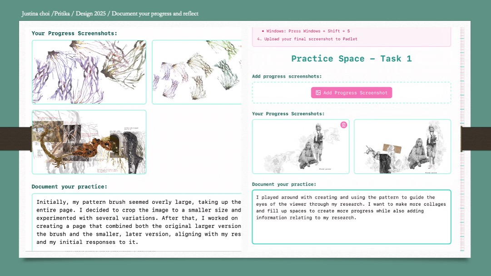
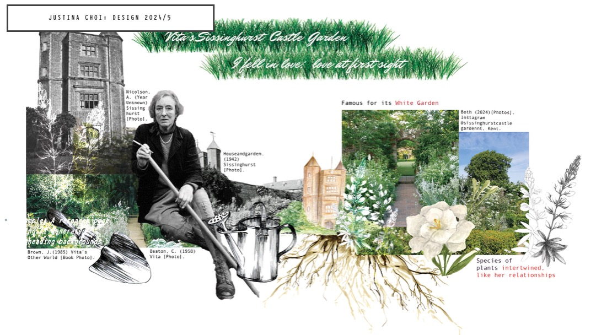

Step-by-Step Workflow
1
Open the Documentation Tool
Click the button below to open the progress documentation page.
2
Upload Screenshots
Add screenshots showing different stages of your work.
- Mac: Command + Shift + 3 (full screen) or Command + Shift + 4 (selection)
- Windows: Windows + Shift + S
3
Add Reflection Notes
Write notes about your process. Consider these questions:
- What techniques did you practise?
- What challenges did you face?
- How did you solve problems?
- What would you do differently next time?
4
Download Your PDF
Click "Download Progress Report" to save your documentation as a PDF file.
5
Submit to Padlet
Upload your completed PDF to the class Padlet.
Open Documentation Tool
Use this tool to capture and annotate your progress screenshots.
Open Documentation ToolTips for Good Documentation
- Capture key moments – show before, during, and after
- Be specific – describe exactly what you did and why
- Include mistakes – showing how you fixed problems demonstrates learning
- Use clear file names – makes it easier to find later
Student Examples

Justina Choi & Pritika Ahuja

Justina Choi
Before You Submit
Submit Your Work
Upload your progress documentation PDF to Padlet.
File name: YOURNAME_task3.pdf
Upload to Padlet